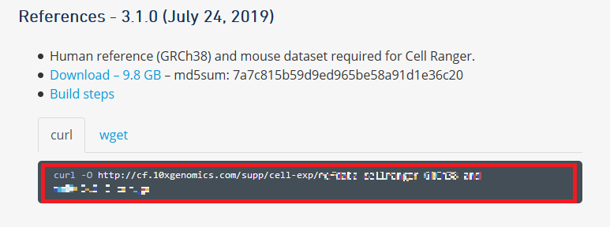

1. Cell Ranger のインストール¶
公式ドキュメント： Cell Ranger Installation
1.1. AWS EC2 インスタンスを起動¶
AWS コンソールにログインし、EC2 インスタンスを起動します。
Cell Ranger を使用するには以下の システム要件 が提示されていますので、1TByte のディスクストレージ (gp2) をつけてインスタンスタイプ t3.2xlarge を選択します。
System Requirements
- 8-core Intel
- 64GB RAM
- 1TB free disk space
- 64-bit CentOS/RedHat 6.0 or Ubuntu 12.04
セキュリティグループではポート 22 番を開けておいてください。
その他の設定はデフォルトのままで構いません。
詳細な手順は以下を参照してください。
EC2 インスタンスを起動したら、 SSH ログインし、アタッチしたストレージを初期化して
/work ディレクトリにマウントしておきます。実際に使用する場合はマウント先のディレクトリ名はなんでも構いませんが、ここでは解説の記載に合わせて
/work ディレクトリとしておきます。mkfs -t ext4 /dev/sdb
mkdir /work
mount /dev/sdb /work
cd /work/
ターミナルはこのまま使いますので、ログインしたままにしておいてください。
1.2. Cell Ranger をダウンロード¶
Cell Rangerは tar ファイルとして公開されています。
必要なソフトウェアの依存関係をすべてまとめたもので、さまざまな Linux ディストリビューションで動作するように事前にコンパイルされていますので、インストールはこのファイルをダウンロードして解凍するだけです。
まず、 このページ にアクセスし、「10x Genomics End User Software License Agreement」を確認して必要事項を入力した後、「Continue to Downloads」ボタンをクリックします。
「Continue to Downloads」ボタンをクリックすると、次のような画面が表示されます。
赤枠の中がダウンロードコマンドですので、すべて選択して、先ほどログインしたターミナルに張り付けて実行します。

ダウンロードしたファイルを解凍します。
ファイル名のバージョンはダウンロードしたファイルに合わせてください。
tar -xzvf cellranger-3.1.0.tar.gz
1.3. リファレンスファイルの準備¶
1-2 で開いたダウンロード画面の下にリファレンスのダウンロードコマンドも表示されています。
赤枠の中をすべて選択して、ターミナルに張り付けて実行します。

1-2 と同様にダウンロードしたファイルを解凍します。
ファイル名のバージョンはダウンロードしたファイルに合わせてください。
tar -xzvf refdata-cellranger-GRCh38-and-mm10-3.1.0.tar.gz
1.4. Cell Ranger にパスを通す¶
解凍した cellranger-3.1.0 ディレクトリを PATH に追加します。これで cellranger パイプラインを実行することができます。
export PATH=/work/cellranger-3.1.0:$PATH
1.5. インストールの確認¶
cellranger パイプラインが正しくインストールされていることを確認するために cellranger testrun を実行します。
cellranger testrun --id=tiny
以下のように表示されれば成功です。
Pipestance completed successfully!
パイプラインの実行結果は成否にかかわらず tiny/tiny.mri.tgz に出力されています。
1.6. bcl2fastq をインストール¶
ここまでに cellranger パイプラインをインストールしましたが、イルミナの
bcl2fastq ツールは別途インストールする必要があります。まず、次のイルミナのサイトをウェブブラウザで開きます。
https://jp.support.illumina.com/downloads/bcl2fastq-conversion-software-v2-20.html
次に「bcl2fastq2 Conversion Software v2.20 Installer (Linux rpm)」をクリックしてください。
イルミナのユーザログインが必要です。ユーザIDを持っていない場合は「Don't have an account?」をクリックして作成してください。
ログインすると利用規約が表示されますので、確認し、問題なければ「Accept」をクリックします。
ダウンロードのパスが表示されますので、左側のコピーアイコンをクリックしてURLをコピーします。

ブラウザに URL を張り付けてダウンロードしてください。
ダウンロードできたら次のコマンドで解凍しインストールします。
unzip bcl2fastq2-v2-20-0-linux-x86-64.zip
sudo yum install -y bcl2fastq2-v2.20.0.422-Linux-x86_64.rpm
注釈
BCLシーケンスファイル形式
NextSeq、HiSeq、およびNovaSeqのシーケンスシステムでは、生データファイルがバイナリベースコール（BCL）形式で生成されます。 このシーケンスファイル形式は、ユーザーが開発したデータ解析ツールやサードパーティーデータ解析ツールで使用するにはFASTQ形式への変換が必要です。
イルミナは、BCLファイルの変換のためにbcl2fastq変換ソフトウェアを提供しています。bcl2fastqは同梱されるスタンドアロン型変換ソフトウェアで、データをデマルチプレックスし、下流の解析のためにBCLファイルを標準のFASTQファイル形式に変換します